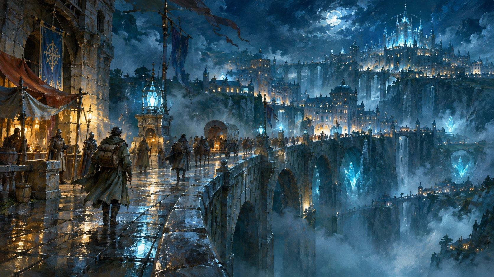
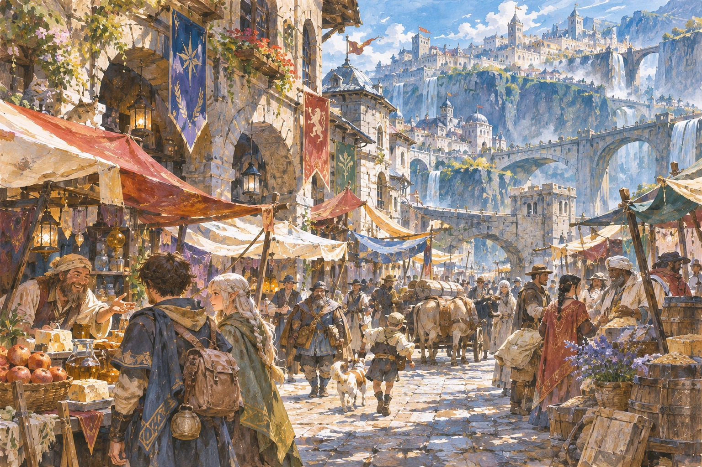
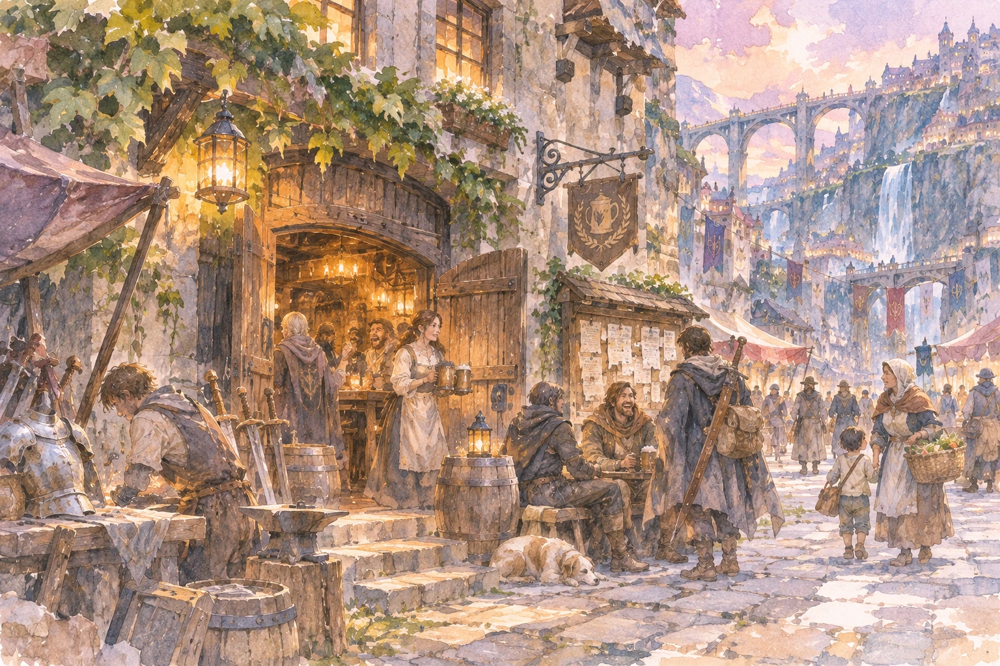
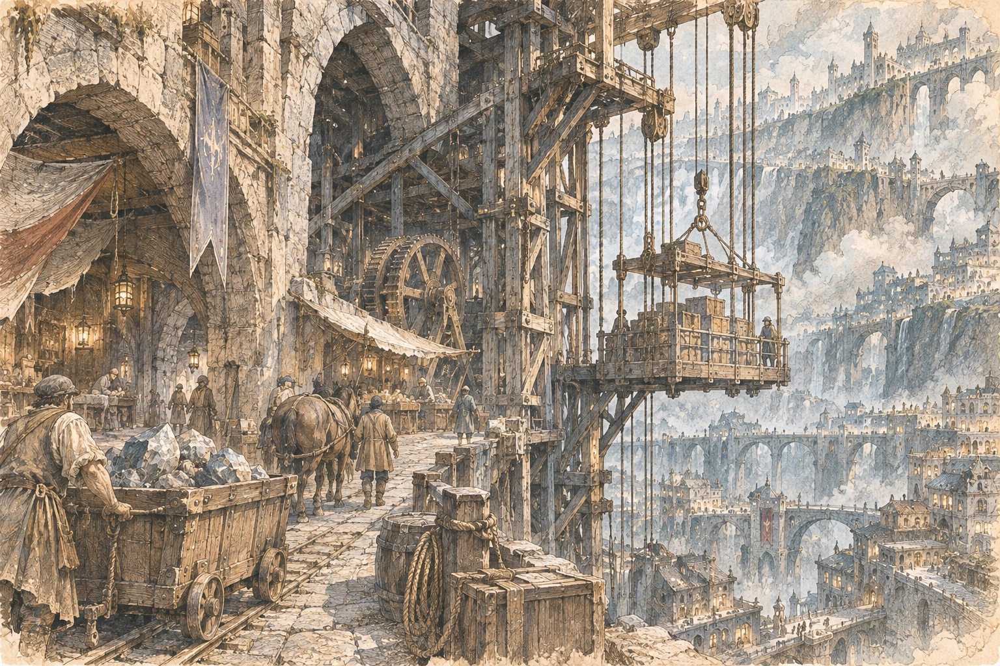
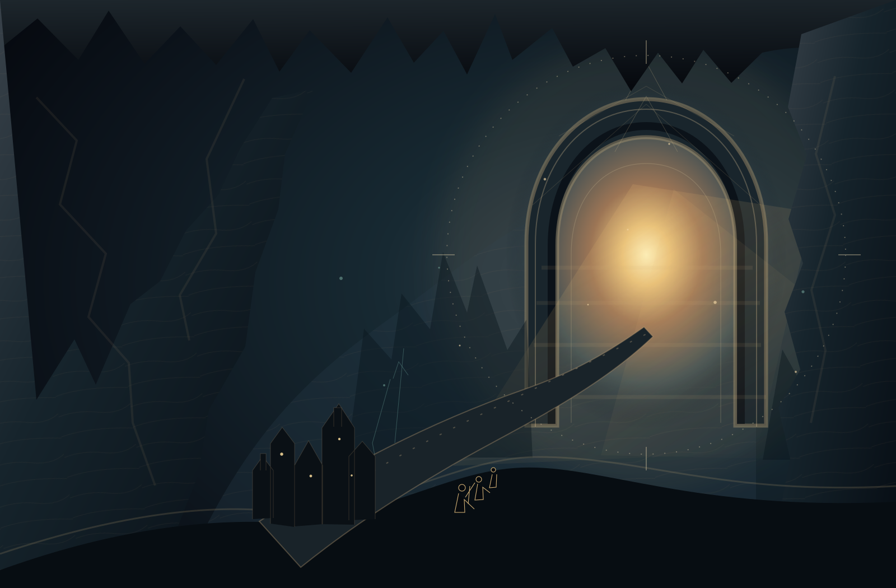

四人で始める、短編ダンジョン探索。
新しく開いた道の先に、百万年の地下世界。
崩れた岩壁の向こうに、
まだ地図に描かれていない空洞がある。
その先にも、道が続いている。

自由迷宮都市
五大国が、この迷宮で交わる。
遠い国の言葉。
魔導具を直す槌音。
帰還を待つ、酒場の灯り。
地下を結ぶ道に、人が集まる。
商人も、職人も、探索者も。
それぞれの理由を、この街に持ち寄って。



その下に、広がるもの
迷宮は、ひとつの世界だ。
岩の向こうに、川がある。
道がある。生き物がいる。
交易があり、誰かの暮らしがある。
古い地層と、新しい裂け目。
いくつもの時間が重なる、その先へ。
まだ、描ききれない世界
その先で、何を見つけるだろう。
- 百万年を掘り当てる。岩の中に眠る力が、遠い街の暮らしを支える。
- 領域主の縄張りへ。そこに生きるものを、君たちはまだ知らない。
- 五大国、その思惑。新しい道と資源をめぐり、異なる願いが交差する。
- 地図が、宝になる。君たちが見つけた道が、誰かの明日をつなぐかもしれない。
次の冒険へ
四人の探索者。ひとつの依頼。その先は、君たちが決める。
この都市を拠点に、迷宮へ。
救助、調査、探索。引き受けた仕事を果たして、帰ってくる。
ひとつの冒険が終わっても、世界の先は続いている。
4人のプレイヤー ／ 1〜2回で完結する短編
D&D 2024年版を暫定採用。次回の導入・開始条件は相談中です。
君は、何を求めて迷宮へ行く？
財宝。知識。誰かとの約束。
その理由が、この世界で生きる君の始まりになる。
- まず、ひとつ何を探しに行く？
- そして誰と、つながっている？
- 共に歩くためになぜ、共に歩く？
キャラクターをつくる
まずは人物像から。数値の作成条件には、まだ未決の項目があります。
もっと、この世界へ。
興味を持ったところから、読んでみてほしい。